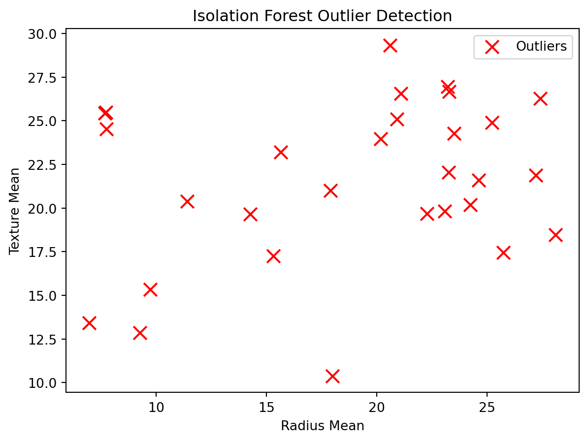
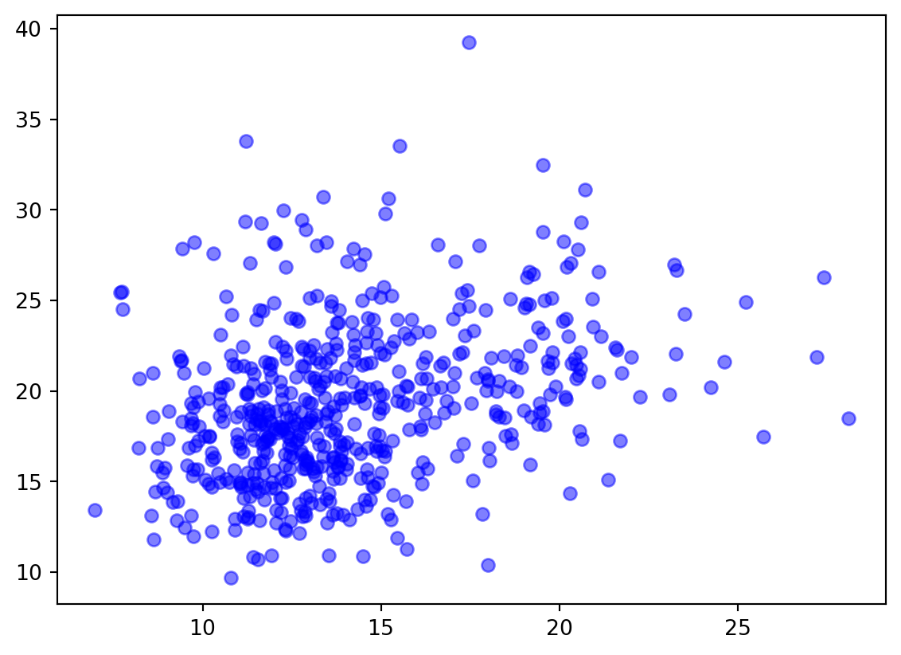
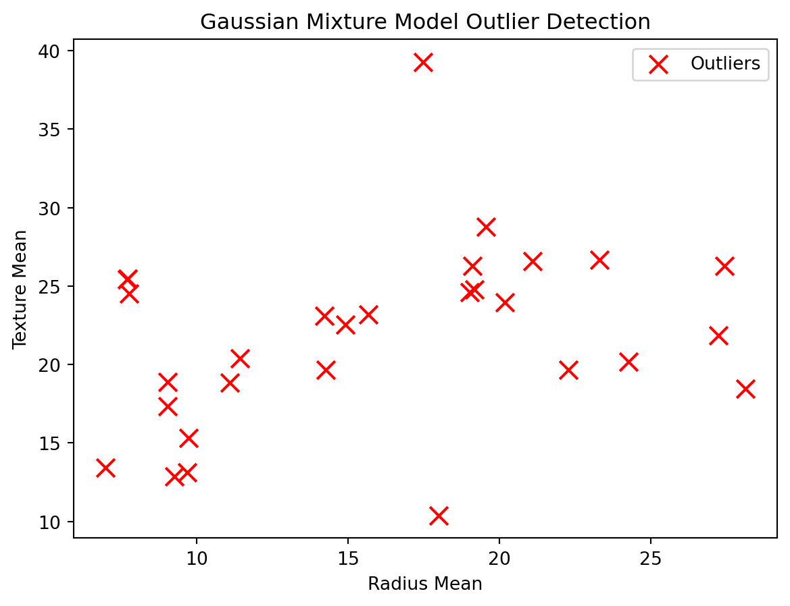

# Import necessary libraries
import pandas as pd
from sklearn.ensemble import IsolationForest
from sklearn.mixture import GaussianMixture
from sklearn.preprocessing import LabelEncoder
import matplotlib.pyplot as plt
import numpy as npIsolation Forest
Anomaly and outlier detection is a statistical technique used to identify data points that deviate significantly from the rest of a given dataset. Outliers can provide useful insights like potential errors and unique patterns. One particular anomaly detection method is the Isolation Forest method. Isolation Forest is a powerful anomaly detection method that operates by isolating outliers in a dataset. Unlike traditional methods, it utilizes a randomized and hierarchical approach, making it especially effective in identifying anomalies.
In the context of breast cancer detection, Isolation Forest can be applied to identify unusual or suspicious patterns within medical imaging data or specific characteristics related to tumors themselves. The code below performs a study that attempts to identify tumor radius and texture means outliers using the Isolation Forest method for a breast cancer dataset.
# Load the dataset
data = pd.read_csv('data.csv')
data.head()| id | diagnosis | radius_mean | texture_mean | perimeter_mean | area_mean | smoothness_mean | compactness_mean | concavity_mean | concave_points_mean | ... | radius_worst | texture_worst | perimeter_worst | area_worst | smoothness_worst | compactness_worst | concavity_worst | concave_points_worst | symmetry_worst | fractal_dimension_worst | |
|---|---|---|---|---|---|---|---|---|---|---|---|---|---|---|---|---|---|---|---|---|---|
| 0 | 842302 | M | 17.99 | 10.38 | 122.80 | 1001.0 | 0.11840 | 0.27760 | 0.3001 | 0.14710 | ... | 25.38 | 17.33 | 184.60 | 2019.0 | 0.1622 | 0.6656 | 0.7119 | 0.2654 | 0.4601 | 0.11890 |
| 1 | 842517 | M | 20.57 | 17.77 | 132.90 | 1326.0 | 0.08474 | 0.07864 | 0.0869 | 0.07017 | ... | 24.99 | 23.41 | 158.80 | 1956.0 | 0.1238 | 0.1866 | 0.2416 | 0.1860 | 0.2750 | 0.08902 |
| 2 | 84300903 | M | 19.69 | 21.25 | 130.00 | 1203.0 | 0.10960 | 0.15990 | 0.1974 | 0.12790 | ... | 23.57 | 25.53 | 152.50 | 1709.0 | 0.1444 | 0.4245 | 0.4504 | 0.2430 | 0.3613 | 0.08758 |
| 3 | 84348301 | M | 11.42 | 20.38 | 77.58 | 386.1 | 0.14250 | 0.28390 | 0.2414 | 0.10520 | ... | 14.91 | 26.50 | 98.87 | 567.7 | 0.2098 | 0.8663 | 0.6869 | 0.2575 | 0.6638 | 0.17300 |
| 4 | 84358402 | M | 20.29 | 14.34 | 135.10 | 1297.0 | 0.10030 | 0.13280 | 0.1980 | 0.10430 | ... | 22.54 | 16.67 | 152.20 | 1575.0 | 0.1374 | 0.2050 | 0.4000 | 0.1625 | 0.2364 | 0.07678 |
5 rows × 32 columns
# Encode the 'diagnosis' column from categorical (Malignant or Benign) to numeric (1 or 0)
label_encoder = LabelEncoder()
data['diagnosis'] = label_encoder.fit_transform(data['diagnosis'])# Define the feature columns (exclude the 'diagnosis' column)
feature_columns = ['radius_mean', 'texture_mean', 'perimeter_mean', 'area_mean', 'smoothness_mean', 'compactness_mean', 'concavity_mean']# Create a DataFrame with only the feature columns
X = data[feature_columns]# Initialize the Isolation Forest model
isolation_forest = IsolationForest(contamination=0.05)# Fit the model on the data
isolation_forest.fit(X)/Users/rithvikguntor/opt/anaconda3/lib/python3.9/site-packages/sklearn/base.py:450: UserWarning:
X does not have valid feature names, but IsolationForest was fitted with feature names
IsolationForest(contamination=0.05)# Predict outliers using the trained model
outliers = isolation_forest.predict(X)
outliersarray([-1, 1, 1, -1, 1, 1, 1, 1, 1, 1, 1, 1, 1, 1, 1, 1, 1,
1, 1, 1, 1, 1, 1, 1, 1, 1, 1, 1, 1, 1, 1, 1, 1, 1,
1, 1, 1, 1, 1, 1, 1, 1, 1, 1, 1, 1, 1, 1, 1, 1, 1,
1, 1, 1, 1, 1, 1, 1, 1, 1, 1, 1, 1, 1, 1, 1, 1, 1,
1, 1, 1, 1, 1, 1, 1, 1, 1, 1, -1, 1, 1, 1, -1, 1, 1,
1, 1, 1, 1, 1, 1, 1, 1, 1, 1, 1, 1, 1, 1, 1, 1, -1,
1, 1, 1, 1, 1, 1, -1, 1, 1, 1, -1, 1, 1, 1, 1, 1, 1,
1, 1, 1, -1, 1, 1, 1, 1, 1, 1, 1, 1, 1, 1, 1, 1, 1,
1, 1, 1, 1, 1, 1, 1, 1, 1, 1, 1, 1, 1, 1, 1, 1, -1,
1, 1, 1, 1, 1, 1, 1, 1, 1, 1, 1, -1, 1, 1, 1, 1, 1,
1, 1, 1, 1, 1, 1, 1, 1, 1, 1, -1, -1, 1, 1, 1, 1, 1,
1, 1, 1, 1, 1, 1, 1, 1, 1, 1, 1, 1, 1, 1, 1, -1, 1,
1, 1, 1, 1, 1, 1, 1, 1, -1, 1, 1, 1, 1, 1, 1, 1, 1,
1, 1, 1, 1, 1, 1, 1, 1, 1, 1, 1, 1, 1, 1, 1, -1, 1,
1, 1, 1, 1, 1, 1, 1, 1, 1, 1, 1, 1, 1, 1, 1, 1, 1,
1, 1, -1, -1, 1, 1, 1, 1, 1, 1, 1, 1, 1, 1, 1, 1, 1,
1, 1, 1, 1, 1, 1, 1, 1, 1, 1, 1, 1, 1, 1, 1, 1, 1,
1, 1, 1, 1, 1, 1, 1, 1, 1, 1, 1, 1, 1, 1, 1, 1, 1,
1, 1, 1, 1, 1, 1, 1, 1, 1, 1, 1, 1, 1, 1, 1, 1, 1,
1, 1, 1, 1, 1, 1, 1, 1, 1, 1, 1, 1, 1, 1, 1, 1, -1,
1, 1, 1, 1, 1, 1, 1, 1, 1, 1, 1, 1, -1, 1, 1, 1, 1,
1, 1, 1, 1, 1, 1, 1, 1, 1, 1, 1, 1, 1, 1, 1, 1, 1,
1, 1, 1, 1, 1, 1, 1, 1, 1, 1, 1, 1, 1, 1, 1, 1, 1,
1, 1, 1, 1, 1, 1, 1, 1, 1, -1, 1, 1, 1, 1, 1, 1, 1,
1, 1, 1, 1, 1, 1, 1, 1, 1, 1, 1, 1, 1, 1, 1, 1, 1,
1, 1, 1, 1, 1, 1, 1, 1, 1, 1, 1, 1, 1, 1, 1, 1, 1,
1, 1, 1, 1, 1, 1, 1, 1, 1, 1, 1, 1, 1, 1, 1, 1, 1,
1, 1, -1, 1, 1, 1, 1, 1, 1, 1, 1, 1, 1, 1, 1, 1, 1,
1, 1, 1, 1, 1, 1, 1, 1, 1, 1, 1, 1, 1, 1, 1, 1, 1,
1, 1, 1, 1, 1, 1, 1, 1, 1, 1, -1, -1, 1, 1, 1, 1, 1,
1, 1, 1, 1, 1, 1, 1, 1, 1, 1, 1, -1, 1, 1, 1, 1, 1,
1, 1, 1, 1, 1, 1, 1, 1, 1, 1, 1, -1, -1, 1, 1, 1, 1,
1, 1, 1, 1, 1, 1, 1, 1, 1, 1, 1, 1, 1, 1, 1, 1, 1,
1, 1, -1, 1, 1, 1, -1, -1])# Create a new column in the original DataFrame to label the outliers
data['is_outlier'] = outliers# Filter the data to get the outliers, -1 indicates an outlier
outlier_data = data[data['is_outlier'] == -1]# Visualize the data and outliers
plt.figure(figsize=(12, 8))<Figure size 1152x768 with 0 Axes><Figure size 1152x768 with 0 Axes># Scatter plot of feature columns
plt.scatter(data['radius_mean'], data['texture_mean'], label='Data Points', c='b', alpha=0.5)<matplotlib.collections.PathCollection at 0x7fdf2001cd30>
After fitting the Isolation Forest model and identifying outliers, we create a scatter plot of the feature columns, marking the data points in blue and the outliers in red with an ‘x’ marker. The scatter plot helps visualize the outliers in the context of the feature space, making it easier to understand their distribution.
# Mark the outliers in red
plt.scatter(outlier_data['radius_mean'], outlier_data['texture_mean'], label='Outliers', c='r', marker='x', s=100)
plt.xlabel('Radius Mean')
plt.ylabel('Texture Mean')
plt.title('Isolation Forest Outlier Detection')
plt.legend()
plt.show()
After plotting the data, we can take a closer look at the list of outliers.
# Print the outliers
print("Outliers:")
print(outlier_data)Outliers:
id diagnosis radius_mean texture_mean perimeter_mean \
0 842302 1 17.990 10.38 122.80
3 84348301 1 11.420 20.38 77.58
78 8610862 1 20.180 23.97 143.70
82 8611555 1 25.220 24.91 171.50
101 862722 0 6.981 13.43 43.79
108 86355 1 22.270 19.67 152.80
112 86409 0 14.260 19.65 97.83
122 865423 1 24.250 20.20 166.20
152 8710441 0 9.731 15.34 63.78
164 8712289 1 23.270 22.04 152.10
180 873592 1 27.220 21.87 182.10
181 873593 1 21.090 26.57 142.70
202 878796 1 23.290 26.67 158.90
212 8810703 1 28.110 18.47 188.50
236 88299702 1 23.210 26.97 153.50
257 886776 1 15.320 17.27 103.20
258 887181 1 15.660 23.20 110.20
339 89812 1 23.510 24.27 155.10
352 899987 1 25.730 17.46 174.20
400 90439701 1 17.910 21.02 124.40
461 911296202 1 27.420 26.27 186.90
503 915143 1 23.090 19.83 152.10
504 915186 0 9.268 12.87 61.49
521 91762702 1 24.630 21.60 165.50
538 921092 0 7.729 25.49 47.98
539 921362 0 7.691 25.44 48.34
563 926125 1 20.920 25.09 143.00
567 927241 1 20.600 29.33 140.10
568 92751 0 7.760 24.54 47.92
area_mean smoothness_mean compactness_mean concavity_mean \
0 1001.0 0.11840 0.27760 0.30010
3 386.1 0.14250 0.28390 0.24140
78 1245.0 0.12860 0.34540 0.37540
82 1878.0 0.10630 0.26650 0.33390
101 143.5 0.11700 0.07568 0.00000
108 1509.0 0.13260 0.27680 0.42640
112 629.9 0.07837 0.22330 0.30030
122 1761.0 0.14470 0.28670 0.42680
152 300.2 0.10720 0.15990 0.41080
164 1686.0 0.08439 0.11450 0.13240
180 2250.0 0.10940 0.19140 0.28710
181 1311.0 0.11410 0.28320 0.24870
202 1685.0 0.11410 0.20840 0.35230
212 2499.0 0.11420 0.15160 0.32010
236 1670.0 0.09509 0.16820 0.19500
257 713.3 0.13350 0.22840 0.24480
258 773.5 0.11090 0.31140 0.31760
339 1747.0 0.10690 0.12830 0.23080
352 2010.0 0.11490 0.23630 0.33680
400 994.0 0.12300 0.25760 0.31890
461 2501.0 0.10840 0.19880 0.36350
503 1682.0 0.09342 0.12750 0.16760
504 248.7 0.16340 0.22390 0.09730
521 1841.0 0.10300 0.21060 0.23100
538 178.8 0.08098 0.04878 0.00000
539 170.4 0.08668 0.11990 0.09252
563 1347.0 0.10990 0.22360 0.31740
567 1265.0 0.11780 0.27700 0.35140
568 181.0 0.05263 0.04362 0.00000
concave_points_mean ... texture_worst perimeter_worst area_worst \
0 0.14710 ... 17.33 184.60 2019.0
3 0.10520 ... 26.50 98.87 567.7
78 0.16040 ... 31.72 170.30 1623.0
82 0.18450 ... 33.62 211.70 2562.0
101 0.00000 ... 19.54 50.41 185.2
108 0.18230 ... 28.01 206.80 2360.0
112 0.07798 ... 23.73 107.00 709.0
122 0.20120 ... 23.99 180.90 2073.0
152 0.07857 ... 19.49 71.04 380.5
164 0.09702 ... 28.22 184.20 2403.0
180 0.18780 ... 32.85 220.80 3216.0
181 0.14960 ... 33.48 176.50 2089.0
202 0.16200 ... 32.68 177.00 1986.0
212 0.15950 ... 18.47 188.50 2499.0
236 0.12370 ... 34.51 206.00 2944.0
257 0.12420 ... 22.66 119.80 928.8
258 0.13770 ... 31.64 143.70 1226.0
339 0.14100 ... 30.73 202.40 2906.0
352 0.19130 ... 23.58 229.30 3234.0
400 0.11980 ... 27.78 149.60 1304.0
461 0.16890 ... 31.37 251.20 4254.0
503 0.10030 ... 23.87 211.50 2782.0
504 0.05252 ... 16.38 69.05 300.2
521 0.14710 ... 26.93 205.70 2642.0
538 0.00000 ... 30.92 57.17 248.0
539 0.01364 ... 31.89 54.49 223.6
563 0.14740 ... 29.41 179.10 1819.0
567 0.15200 ... 39.42 184.60 1821.0
568 0.00000 ... 30.37 59.16 268.6
smoothness_worst compactness_worst concavity_worst \
0 0.16220 0.66560 0.7119
3 0.20980 0.86630 0.6869
78 0.16390 0.61640 0.7681
82 0.15730 0.60760 0.6476
101 0.15840 0.12020 0.0000
108 0.17010 0.69970 0.9608
112 0.08949 0.41930 0.6783
122 0.16960 0.42440 0.5803
152 0.12920 0.27720 0.8216
164 0.12280 0.35830 0.3948
180 0.14720 0.40340 0.5340
181 0.14910 0.75840 0.6780
202 0.15360 0.41670 0.7892
212 0.11420 0.15160 0.3201
236 0.14810 0.41260 0.5820
257 0.17650 0.45030 0.4429
258 0.15040 0.51720 0.6181
339 0.15150 0.26780 0.4819
352 0.15300 0.59370 0.6451
400 0.18730 0.59170 0.9034
461 0.13570 0.42560 0.6833
503 0.11990 0.36250 0.3794
504 0.19020 0.34410 0.2099
521 0.13420 0.41880 0.4658
538 0.12560 0.08340 0.0000
539 0.15960 0.30640 0.3393
563 0.14070 0.41860 0.6599
567 0.16500 0.86810 0.9387
568 0.08996 0.06444 0.0000
concave_points_worst symmetry_worst fractal_dimension_worst is_outlier
0 0.2654 0.4601 0.11890 -1
3 0.2575 0.6638 0.17300 -1
78 0.2508 0.5440 0.09964 -1
82 0.2867 0.2355 0.10510 -1
101 0.0000 0.2932 0.09382 -1
108 0.2910 0.4055 0.09789 -1
112 0.1505 0.2398 0.10820 -1
122 0.2248 0.3222 0.08009 -1
152 0.1571 0.3108 0.12590 -1
164 0.2346 0.3589 0.09187 -1
180 0.2688 0.2856 0.08082 -1
181 0.2903 0.4098 0.12840 -1
202 0.2733 0.3198 0.08762 -1
212 0.1595 0.1648 0.05525 -1
236 0.2593 0.3103 0.08677 -1
257 0.2229 0.3258 0.11910 -1
258 0.2462 0.3277 0.10190 -1
339 0.2089 0.2593 0.07738 -1
352 0.2756 0.3690 0.08815 -1
400 0.1964 0.3245 0.11980 -1
461 0.2625 0.2641 0.07427 -1
503 0.2264 0.2908 0.07277 -1
504 0.1025 0.3038 0.12520 -1
521 0.2475 0.3157 0.09671 -1
538 0.0000 0.3058 0.09938 -1
539 0.0500 0.2790 0.10660 -1
563 0.2542 0.2929 0.09873 -1
567 0.2650 0.4087 0.12400 -1
568 0.0000 0.2871 0.07039 -1
[29 rows x 33 columns]The above code displays the outliers in the plot as well as the individual outlier data points outputted as a list. In the study, we looked at the radius_mean’, ‘texture_mean’, ‘perimeter_mean’, ‘area_mean’, ‘smoothness_mean’, ‘compactness_mean’, and ‘concavity_mean’ features. The Isolation Forest method used this subset of features in our data to identify outliers in the context of the texture_mean and radius_mean variables, as seen in the graph.
By efficiently isolating and identifying outliers within our dataset, this method has enabled us to extract valuable insights and uncover unusual patterns that may have otherwise remained hidden from us. The Isolation Forest’s capability to handle high-dimensional data, scalability, and ease of implementation make it a valuable asset in outlier and anomaly detection.
Gaussian Mixture Method
Along with the Isolation Forest method, there is another anomaly/outlier detection method known as the Gaussian Mixture model. We use the Gaussian Mixture Model (GMM) to fit the data and calculate Mahalanobis distances for each data point. Then, a threshold for anomaly detection is set based on the Mahalanobis distances. The threshold can be adjusted as needed. Data points are then labeled as an outlier or not depending on the comparison of their value to the threshold. The code below uses GMM to identify outliers based on Mahalanobis distances, which can be a powerful approach for anomaly detection. Adjust the number of components and threshold according to your specific dataset and requirements.
# Performs outlier/anomaly detection using Gaussian Mixture Model
# Initialize the Gaussian Mixture Model with a specified number of components (clusters) - We use 2 components to separate Malignant and Benign classes
n_components = 2
gmm = GaussianMixture(n_components=n_components)# Fit the model on the data
gmm.fit(X)GaussianMixture(n_components=2)# Calculate the Mahalanobis distances for each data point
mahalanobis_distances = gmm.score_samples(X)# Set a threshold for anomaly detection (you can adjust this threshold)
threshold = np.percentile(mahalanobis_distances, 5)# Identify outliers based on the threshold
outliers = mahalanobis_distances < thresholdWe identify outliers based on the threshold and create a new column ‘is_outlier’ in the original DataFrame to label the outliers.
# Create a new column in the original DataFrame to label the outliers
data['is_outlier'] = outliers# Filter the data to get the outliers
outlier_data = data[data['is_outlier']]# Visualize the data and outliers
plt.figure(figsize=(12, 8))<Figure size 1152x768 with 0 Axes><Figure size 1152x768 with 0 Axes># Scatter plot of feature columns
plt.scatter(data['radius_mean'], data['texture_mean'], label='Data Points', c='b', alpha=0.5)<matplotlib.collections.PathCollection at 0x7fdf195b7c40>
# Mark the outliers in red
plt.scatter(outlier_data['radius_mean'], outlier_data['texture_mean'], label='Outliers', c='r', marker='x', s=100)
plt.xlabel('Radius Mean')
plt.ylabel('Texture Mean')
plt.title('Gaussian Mixture Model Outlier Detection')
plt.legend()
plt.show()
# Print the outliers
print("Outliers:")
print(outlier_data)Outliers:
id diagnosis radius_mean texture_mean perimeter_mean \
0 842302 1 17.990 10.38 122.80
3 84348301 1 11.420 20.38 77.58
12 846226 1 19.170 24.80 132.40
68 859471 0 9.029 17.33 58.79
78 8610862 1 20.180 23.97 143.70
83 8611792 1 19.100 26.29 129.10
87 86135502 1 19.020 24.59 122.00
101 862722 0 6.981 13.43 43.79
108 86355 1 22.270 19.67 152.80
112 86409 0 14.260 19.65 97.83
122 865423 1 24.250 20.20 166.20
152 8710441 0 9.731 15.34 63.78
180 873592 1 27.220 21.87 182.10
181 873593 1 21.090 26.57 142.70
190 874858 1 14.220 23.12 94.37
202 878796 1 23.290 26.67 158.90
212 8810703 1 28.110 18.47 188.50
239 88330202 1 17.460 39.28 113.40
256 88649001 1 19.550 28.77 133.60
258 887181 1 15.660 23.20 110.20
318 894329 0 9.042 18.90 60.07
379 9013838 1 11.080 18.83 73.30
430 907914 1 14.900 22.53 102.10
461 911296202 1 27.420 26.27 186.90
504 915186 0 9.268 12.87 61.49
505 915276 0 9.676 13.14 64.12
538 921092 0 7.729 25.49 47.98
539 921362 0 7.691 25.44 48.34
568 92751 0 7.760 24.54 47.92
area_mean smoothness_mean compactness_mean concavity_mean \
0 1001.0 0.11840 0.27760 0.30010
3 386.1 0.14250 0.28390 0.24140
12 1123.0 0.09740 0.24580 0.20650
68 250.5 0.10660 0.14130 0.31300
78 1245.0 0.12860 0.34540 0.37540
83 1132.0 0.12150 0.17910 0.19370
87 1076.0 0.09029 0.12060 0.14680
101 143.5 0.11700 0.07568 0.00000
108 1509.0 0.13260 0.27680 0.42640
112 629.9 0.07837 0.22330 0.30030
122 1761.0 0.14470 0.28670 0.42680
152 300.2 0.10720 0.15990 0.41080
180 2250.0 0.10940 0.19140 0.28710
181 1311.0 0.11410 0.28320 0.24870
190 609.9 0.10750 0.24130 0.19810
202 1685.0 0.11410 0.20840 0.35230
212 2499.0 0.11420 0.15160 0.32010
239 920.6 0.09812 0.12980 0.14170
256 1207.0 0.09260 0.20630 0.17840
258 773.5 0.11090 0.31140 0.31760
318 244.5 0.09968 0.19720 0.19750
379 361.6 0.12160 0.21540 0.16890
430 685.0 0.09947 0.22250 0.27330
461 2501.0 0.10840 0.19880 0.36350
504 248.7 0.16340 0.22390 0.09730
505 272.5 0.12550 0.22040 0.11880
538 178.8 0.08098 0.04878 0.00000
539 170.4 0.08668 0.11990 0.09252
568 181.0 0.05263 0.04362 0.00000
concave_points_mean ... texture_worst perimeter_worst area_worst \
0 0.14710 ... 17.33 184.60 2019.0
3 0.10520 ... 26.50 98.87 567.7
12 0.11180 ... 29.94 151.70 1332.0
68 0.04375 ... 22.65 65.50 324.7
78 0.16040 ... 31.72 170.30 1623.0
83 0.14690 ... 32.72 141.30 1298.0
87 0.08271 ... 30.41 152.90 1623.0
101 0.00000 ... 19.54 50.41 185.2
108 0.18230 ... 28.01 206.80 2360.0
112 0.07798 ... 23.73 107.00 709.0
122 0.20120 ... 23.99 180.90 2073.0
152 0.07857 ... 19.49 71.04 380.5
180 0.18780 ... 32.85 220.80 3216.0
181 0.14960 ... 33.48 176.50 2089.0
190 0.06618 ... 37.18 106.40 762.4
202 0.16200 ... 32.68 177.00 1986.0
212 0.15950 ... 18.47 188.50 2499.0
239 0.08811 ... 44.87 141.20 1408.0
256 0.11440 ... 36.27 178.60 1926.0
258 0.13770 ... 31.64 143.70 1226.0
318 0.04908 ... 23.40 68.62 297.1
379 0.06367 ... 32.82 91.76 508.1
430 0.09711 ... 27.57 125.40 832.7
461 0.16890 ... 31.37 251.20 4254.0
504 0.05252 ... 16.38 69.05 300.2
505 0.07038 ... 18.04 69.47 328.1
538 0.00000 ... 30.92 57.17 248.0
539 0.01364 ... 31.89 54.49 223.6
568 0.00000 ... 30.37 59.16 268.6
smoothness_worst compactness_worst concavity_worst \
0 0.16220 0.66560 0.7119
3 0.20980 0.86630 0.6869
12 0.10370 0.39030 0.3639
68 0.14820 0.43650 1.2520
78 0.16390 0.61640 0.7681
83 0.13920 0.28170 0.2432
87 0.12490 0.32060 0.5755
101 0.15840 0.12020 0.0000
108 0.17010 0.69970 0.9608
112 0.08949 0.41930 0.6783
122 0.16960 0.42440 0.5803
152 0.12920 0.27720 0.8216
180 0.14720 0.40340 0.5340
181 0.14910 0.75840 0.6780
190 0.15330 0.93270 0.8488
202 0.15360 0.41670 0.7892
212 0.11420 0.15160 0.3201
239 0.13650 0.37350 0.3241
256 0.12810 0.53290 0.4251
258 0.15040 0.51720 0.6181
318 0.12210 0.37480 0.4609
379 0.21840 0.93790 0.8402
430 0.14190 0.70900 0.9019
461 0.13570 0.42560 0.6833
504 0.19020 0.34410 0.2099
505 0.20060 0.36630 0.2913
538 0.12560 0.08340 0.0000
539 0.15960 0.30640 0.3393
568 0.08996 0.06444 0.0000
concave_points_worst symmetry_worst fractal_dimension_worst is_outlier
0 0.2654 0.4601 0.11890 True
3 0.2575 0.6638 0.17300 True
12 0.1767 0.3176 0.10230 True
68 0.1750 0.4228 0.11750 True
78 0.2508 0.5440 0.09964 True
83 0.1841 0.2311 0.09203 True
87 0.1956 0.3956 0.09288 True
101 0.0000 0.2932 0.09382 True
108 0.2910 0.4055 0.09789 True
112 0.1505 0.2398 0.10820 True
122 0.2248 0.3222 0.08009 True
152 0.1571 0.3108 0.12590 True
180 0.2688 0.2856 0.08082 True
181 0.2903 0.4098 0.12840 True
190 0.1772 0.5166 0.14460 True
202 0.2733 0.3198 0.08762 True
212 0.1595 0.1648 0.05525 True
239 0.2066 0.2853 0.08496 True
256 0.1941 0.2818 0.10050 True
258 0.2462 0.3277 0.10190 True
318 0.1145 0.3135 0.10550 True
379 0.2524 0.4154 0.14030 True
430 0.2475 0.2866 0.11550 True
461 0.2625 0.2641 0.07427 True
504 0.1025 0.3038 0.12520 True
505 0.1075 0.2848 0.13640 True
538 0.0000 0.3058 0.09938 True
539 0.0500 0.2790 0.10660 True
568 0.0000 0.2871 0.07039 True
[29 rows x 33 columns]The code above shows the outliers in the graph marked with an ‘X’. It can be seen that there are various similarities between the results from this graph as well as that from the Isolation Forest approach. There are various differences as well in the outlier results, and this is most likely a result of the differences in the outlier calculation approaches. Despite the differences in both approaches, the visualizations appear to display fairly accurate representations of the outlier data in both cases. Both approaches are powerful outlier detection techniques, and the choice between these methods is dependent on the structure of the data being worked with.